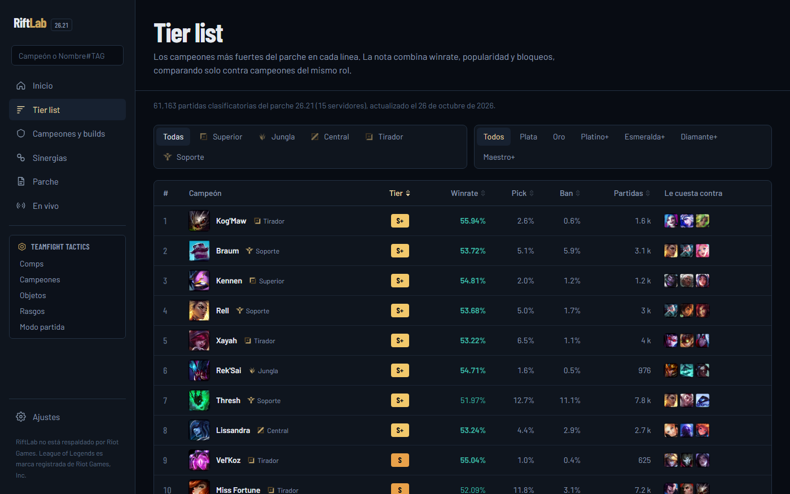
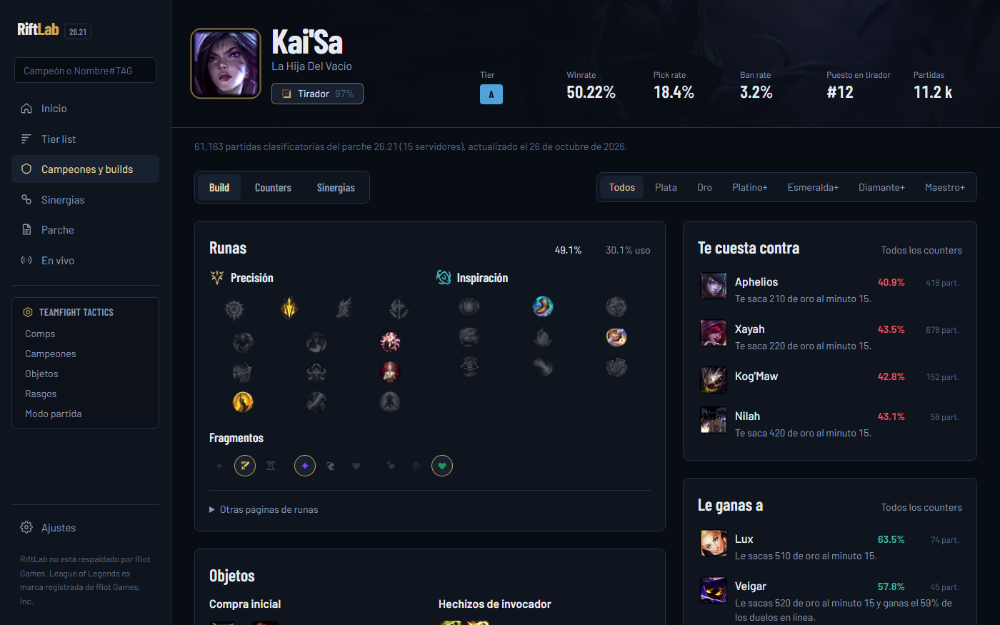
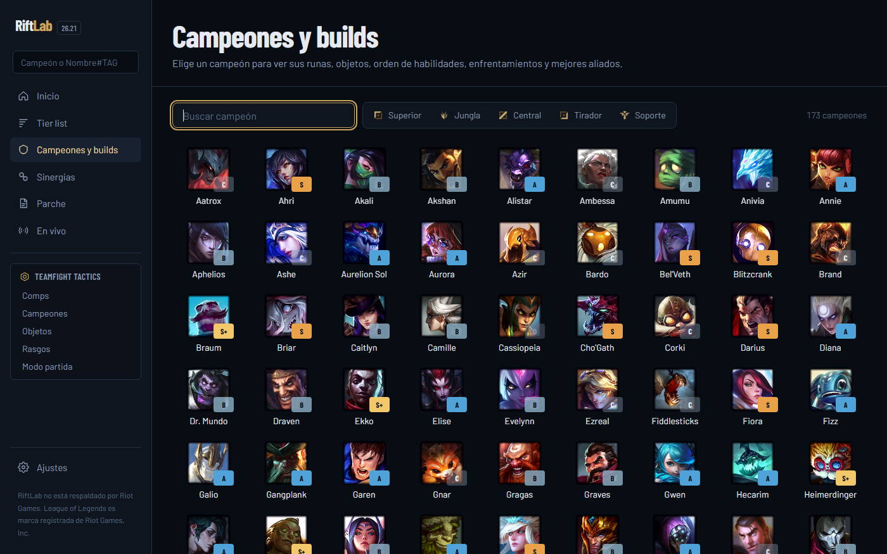
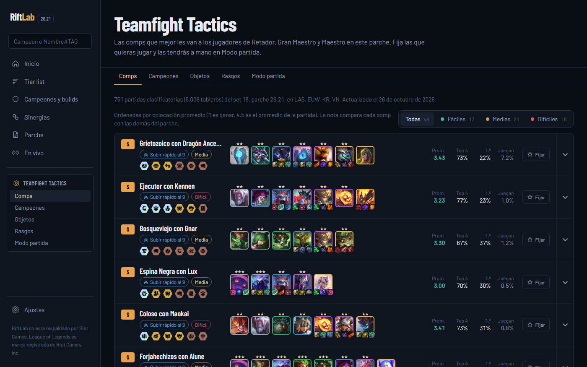

Entiende cada partida que juegas
RiftLab es una app de escritorio para Windows con estadísticas de League of Legends y TFT. Te muestra tu historial con una nota por partida, la build que más gana contra tu rival, el rango de cada jugador en la pantalla de carga y un resumen con consejos al terminar. Es gratis, no tiene anuncios y no pide crear cuenta.

Builds según contra quién juegas
Cada campeón tiene runas, objetos, hechizos y orden de habilidades sacados de miles de partidas clasificatorias del parche. Si eliges al rival, la build cambia a la que más gana en ese enfrentamiento.

Un resumen al terminar la partida
Apenas termina la partida, RiftLab abre una nota de la S a la D con lo que salió bien y lo que no: farm, visión, muertes tempranas, objetivos y cómo se compara tu build con la más ganadora. Si la sesión viene mal, también te sugiere una pausa.

TFT también
Composiciones del set actual con su posición promedio, objetos recomendados por campeón y una ventana flotante con las comps para tener a mano mientras juegas.

Cómo usa la API de Riot
RiftLab solo lee datos públicos de la API oficial de Riot Games. La clave de la API nunca viaja dentro de la app: queda guardada en un servidor intermediario que responde las consultas de la app, las limita a lo que RiftLab necesita y guarda en caché las partidas terminadas para no repetir consultas.
| API | Para qué |
|---|---|
account-v1, summoner-v4 | Buscar un jugador por su Riot ID y mostrar su ícono y nivel. |
league-v4 | Rango y LP del perfil. Las ligas de Maestro a Retador sirven para elegir de qué partidas salen las estadísticas. |
champion-mastery-v4 | Campeones con más maestría del perfil. |
match-v5 (partidas y línea de tiempo) | Historial, resumen post-partida y las estadísticas de builds y enfrentamientos. |
spectator-v5 | Saber si el jugador está en partida y mostrar la pantalla de carga. |
tft-league-v1, tft-match-v1 | Estadísticas de composiciones de TFT. |
- Selección de campeones: en clasificatorias no muestra quiénes son los rivales; solo lo que el cliente ya muestra al jugador. Los jugadores rivales aparecen recién cuando empieza la partida.
- TFT: nada cambia según la partida en curso. La ventana flotante muestra las mismas comps generales que la app.
- Sin ventajas indebidas: no automatiza acciones del juego, no lee la memoria del juego y no revela información oculta.
- Límites: la app respeta los límites de consultas, espera lo que Riot indica tras un aviso de límite y deja de pedir datos secundarios cuando quedan pocas consultas.
About RiftLab (English)
RiftLab is a free Windows desktop app for League of Legends and TFT players, with no ads and no accounts. It shows a player's match history with a score for each game, champion builds aggregated from ranked matches (including the best build against a specific opponent), a loading-screen view with each player's rank once the game has started, and a post-game summary with improvement tips. The Riot API key is never shipped inside the app: it stays on a small intermediary server that only forwards the endpoints listed above, caches finished matches and respects Riot's rate limits. RiftLab does not reveal hidden information (opponents in ranked champion select are not shown), does not change during TFT games and does not automate anything in the game.